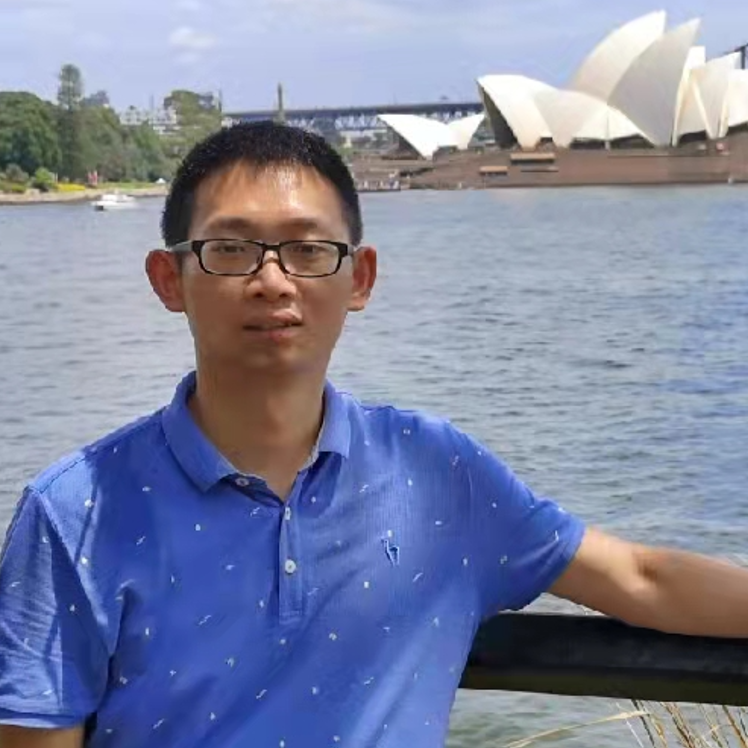

Deyang Liu
Deyang Liu
(刘德阳)
Associate Professor
School of Computer and Information
Anqing Normal University
Associate Professor
School of Computer and Information
Anqing Normal University
刘德阳，男，山东聊城人，博士，副教授，硕士生导师，悉尼科技大学访问学者。2017年获得上海大学信号与信息处理博士学位； 2018年遴选为软件工程专业硕士生导师；2019年12月晋升副教授；2019年-2020年在悉尼科技大学访问学习。 目前主持国家自然科学基金2项（包括面上项目1项，青年项目1项），其他省厅级项目7项。发表论文32篇，其中第一作者SCI/EI检索论文16篇。